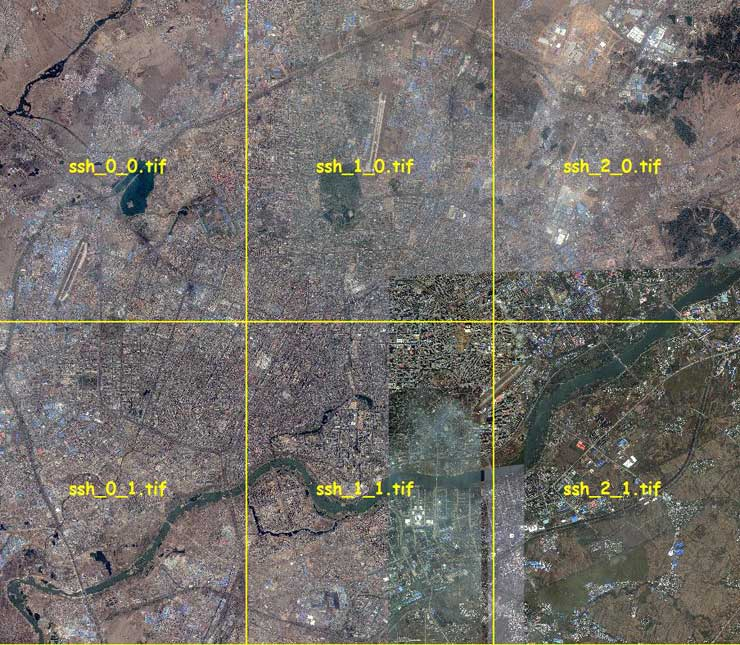
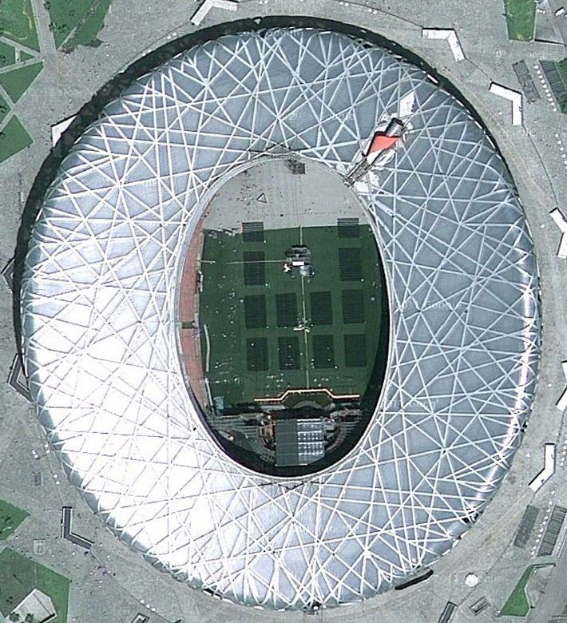
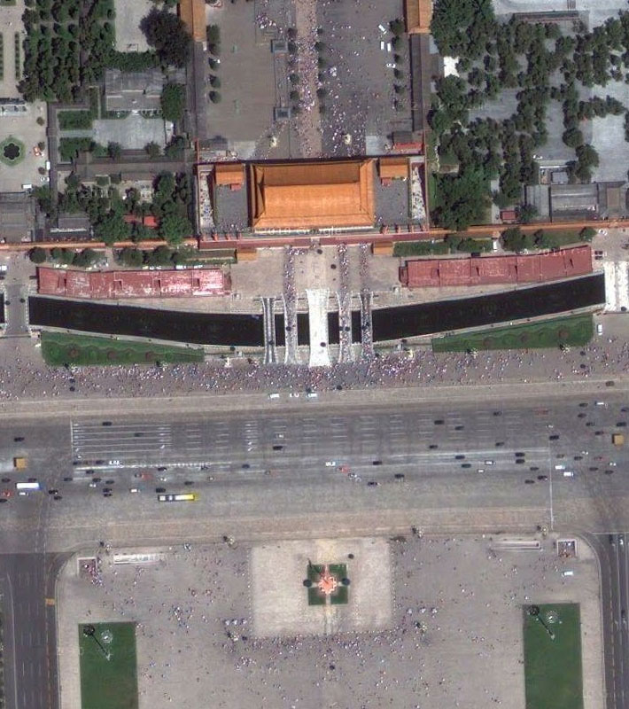
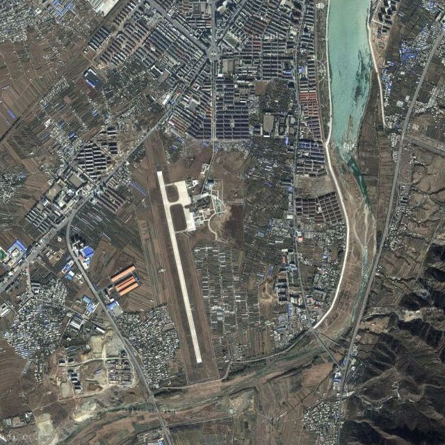
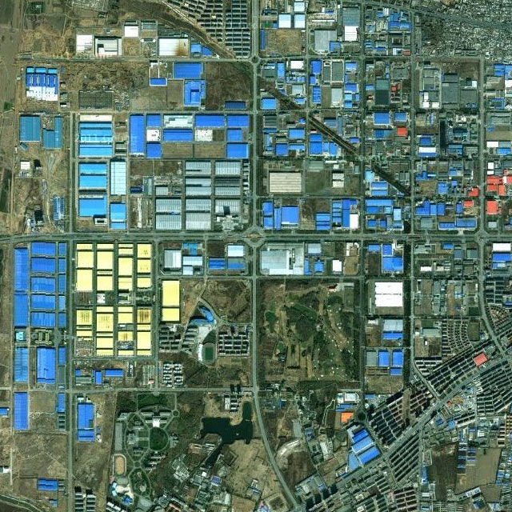
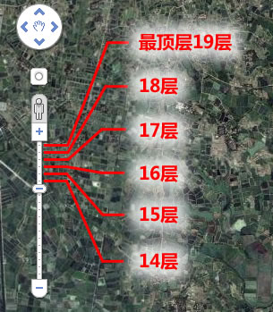

|
| 首页 | GeoTIFF | 今日花园Maps | OruxMaps | OZI | 资源 | 软件 | 联系 |
| 当前位置：GeoTIFF |
|
GeoTIFF格式卫星影像是带有坐标信息的图像文件，谷歌卫星地图（或天地图卫星地图）都是Web Mercator坐标系统，国际标准代码是EPSG:3857，一些新版本的地理信息系统(GIS)软件已经支持该坐标系统。 本站提供一个GeoTIFF格式的北京18层谷歌卫星地图给大家测试使用，下载地址： 测试北京18层 本站可下载谷歌卫星地图并制作成GeoTIFF格式的影像图片，地图数据从谷歌国外服务器上获取，没有坐标偏移。 在下载制作卫星地图时，需提供以下二项参数，以便于地图的制作： 1) 地图的范围。 2) 清晰度层级。 一、地图的范围 本站制作的卫星地图都是矩型(长方型或者方型)的，指定地图范围时可以提供左上角和右下角两点的坐标，或者提供小比例的范围截图。 由于一幅地图最大只能2G，所以如果你指定的地图范围很大，一幅地图做不下，这时就要分成几幅地图来制作，如下图所示： |

|
多幅图片之间都是无缝衔接的，可以用图像编辑软件photoshop7.0及以上版本打开查看，但不能用photoshop对图片进行编辑，否则图片自身携带的坐标信息会丢失。 二、清晰度层级 谷歌卫星地图的清晰度是由层数决定的，层数越大则清晰度越高，本站制作的卫星地图大城市清晰度可以做到18层，按省份制作的卫星地图清晰度一般为15层。 18层清晰度的效果如下图所示： |


|
14层清晰度的效果如下图所示： |


|
谷歌卫星地图层数的查看方法是，打开谷歌地图网站(http://ditu.google.cn/)，通过左边的缩放滑块来确定地图的层数，在中国大陆地区滑块拖到最上是19层。如下图所示： |

|
由于谷歌卫星地图的清晰度并不是在所有地区都能达到18层，所以清晰度的层数能达到多少层级，要通过查看谷歌卫星地图后才能确定，请在制作前与本站咨询有关事宜。 本店制作的卫星地图，一般都是纯卫星图片（不带地名），如有特殊需求，在制作前请说明。 本站淘宝网店地址：淘宝店 |
| www.todaygarden.net |
版权所有 2010-2020 今日花园 |